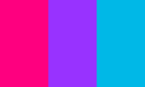

Disclaimer: Gender is fluid and everyone experiences it in their own unique way. These definitions do not necessarily cover all the ins-and-outs of what identifying as these gender identities feel like, but are here to state some ways people who identify as these different genders may feel.
This list also may not include every single gender out there, but includes many.
There are also multiple designs for the pride flags of each gender, so we chose one for each definition to use as an example of a flag.
It is important to remember that you do not have to label your gender as anything if you are uncomfortable with it. The terms on the list below are just some labels.
Another important note is that the pronouns someone uses does not equate to their gender. For example, not all nonbinary people use they/them pronouns.
Agender: The term 'agender' literally means 'without gender'. People who identify as agender may describe themselves as genderless, gender neutral (being neither a man or a woman but still having a gender), having a gender they cannot identify (that does not fit any binary or nonbinary genders), not caring about gender, and many other things.
Androgyne: Androgyne is a gender identity that falls under the nonbinary umbrella. People who identify with this gender identity have a gender that is feminine and masculine at the same time. Femininity and masculinity do not necessarily have to be felt in equal amounts. Some more specific terms include femandrogyne (more feminine than masculine), mascandrogyne (more masculine than feminine), versandrogyne (go between being femandrogyne and mascandrogyne), neutrandrogyne (mixture of femininity and masculinity or none), and demiandrogyne (person who partially identifies as androgyne)
Bigender: The term bigender is under the nonbinary umbrella. People who identify as bigender may have two distinct gender identities. They may experience both these genders at the same time or fluctuate between the two. The two genders a bigender person experiences do not have to be exclusively feminine or masculine but they can be agender or other gender identities as well.
Cisgender: When someone is cisgender, it means that they identify with their assigned gender at birth. They are not transgender. People who are both cisgender and heterosexual are not a part of the 2SLGBTQ+ community, but they can certainly be supportive allies.
Demigender: The term demigender falls under the nonbinary umbrella. People who identify as demigender may only feel a partial connection to a gender identity. This 'connection' does not necessarily have to be partially to a gender and partially to agender. Sometimes, demigender people may feel like they have a connection to a gender that cannot be described or they just do not feel an absence of a gender. Some terms that fall under the demigender category are demigirl (partially identifies as a woman), demiboy (partially identifies as a man), demifluid (partially fluid gender), and there are many others.
Genderfluid: The gender of people who identify as genderfluid varies over time. A genderfluid person's identity may change often (ex: feel like a girl in one moment and in the next, feel like a boy), so it is important to ask what they identify as when you interact with them. Some genderfluid people may identify with being multigender, nonbinary, or transgender.
Gender Binary: This term refers to the social system that recognizes only 'male' and 'female' genders. In this system, people are raised as their assigned gender at birth.
Genderqueer: Genderqueer is somewhat of an umbrella term that can fit anyone who is not cisgender. People who identify as genderqueer may not fit inside the binary but also may not fit into a distinct place outside of it either.
Neutrois: When someone identifies as neutrois, their gender may be neutral, or they may have a lack of gender in some cases. It has some overlap with agender. Some people identify as both neutrois and agender, but some prefer using just one term.
Non-binary (also spelled nonbinary): Non-binary is an umbrella term (under another umbrella term, transgender) for any gender identity that is not restricted to male or female. Some people like get more specific when identifying their gender but for others, identifying as non-binary is as specific as they are comfortable with.
Pangender: People who are pangender may identify as multiple genders or all genders. Some argue that this term is racist because it includes culture-specific genders, but others say that it only extends to the genders within a person's own culture.
Transgender: This is an umbrella term for people who identify as a different gender than the one they were assigned at birth. Their gender may be binary (male or female) or non-binary (outside male or female).
Two-Spirit: Two-Spirit is a term specific to indigenous people. This term refers to someone who has both a masculine and feminine spirit. This is an umbrella term that can be used to describe their sexual or romantic orientation, gender identity, or spiritual identity.
Unlabeled: This term is used by people who do not want to put a label on their gender. Some people who use this term think that 'agender' is labeling their gender (or the lack thereof). These people may choose not to identify their gender because there is no label that accurately describes their gender, they prefer to label their gender, or for safety reasons.
